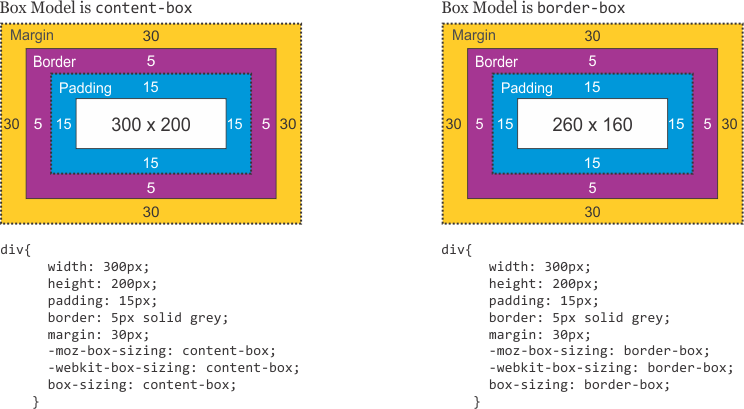

Week 3
Overview
Resources
Positioning
When you use anything other that static (the default value for position),
you'll be able to use the properties top, right,
bottom and left to adjust your elements position, but
how it is positioned depends on what value you set position to:
-
position: static;Positions based on the content; cannot be adjusted and it's the default value for position for all elements (you probably don't need to know that, but can use it to sound cool at parties).
-
position: fixed;Positions with respect to the browser window (useful for sticky headers and stuff). Use with caution because it will probably cover text!
-
position: relative;Positions relative to where it normally is.
-
position: absolute;"Absolute children have relative parents!" An absolute child element will be positioned relative to it's parent (the one that has
position: relative).
What happens if you make the header on ACME Corp fixed?
Great example from Learn Layout
Box Model
Pseudo-selectors!
Pseudo-selectors allow you to create CSS selectors that select elements based on a particular state of that element (called pseudo-classes). They are denoted by a colon. For example: a:hover selects the <a> tags that are currently being hovered over by the cursor.
A list of all the available pseudo-classes is available on MDN.
Some rules of thumb when using pseudo-selectors:
- Use them sparingly! If you're uncertain, you probably don't need it.
- Don't get too clever -- It's really easy for pseudo-selectors to get confusing!